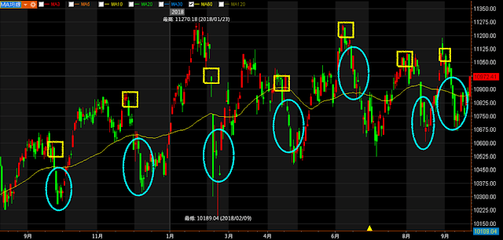

-
多方趨勢
- 觀察大盤指數(道瓊指數/上市櫃指數)
- 只做初升跟主升
- 追趨勢盤整後第一天突破5% 做隔日沖 or 抱波段
-
盤整
- 做短線 (當沖/隔日沖)
- 均線糾結第一天發動> 5% 尾盤進場
- 篩選盤整股票隔天程式掛9.5% 進場
- 做短線 (當沖/隔日沖)
-
向上加碼 (槓桿商品) or 美股 (趨勢太長幾年連續上漲)
-
ex: 臺指每賺200點加碼一次
- 期貨拆10筆進場
- 看對行情，等待回檔才向上加碼，並不是每格200點加碼這樣風險大，要等回檔再加碼通常都是技術分析上，一個很好的買點
- 應該要賺300點後，回檔到200點再加碼
- 後期脫離總成本遠安全就可以加大點 (需要計算)
-
向下攤平 (臺股勝率高)
- 用在止跌反轉 (崩跌線型 ？)
- 進場點
- 第二筆打進去需判斷
- 離止跌點很近
- 近情要起漲
- 波動率邊緣進場 ATR 低波動？
- 第二筆打進去需判斷
- 如何設定停損？
- 需根據分析設定停損，所以停損要小 5~8%？
- 分析的止跌點停損設很大是凹單
- 保留一筆資金在股價高於成本區後再進場 ex: 40萬 30萬 拉過成均成本再進去 30萬(最後一筆)
- 為什麼最後一筆要拉過成本再進怕遇到崩跌，全部錢會吐回去
-
爆賺
- 下時代會是誰？ ex: 現在是特斯拉在火，誰讓特斯拉逼著起來
- 找好商品(獨角獸)
- 找好買點才可以持續加碼
- 崩跌後出現
- 轉機股、未來成長股
- 成本低才好加碼
- 張鬆允月K長紅發動後，等待拉回量縮持續買(能爆賺?)
-
逆勢好處
- 順勢交易進場點價位通常不好
- 所以要順大逆小(逆KD)
-
JG
-
逆KD /逆布林
- 逆布林
- 多頭趨勢使用 跌破下緣買進，並設好停損 通過通道上緣不要停利，向上分批賣出
- 逆布林
-
恐慌 定義
- 多頭趨勢裡
- 技術分析者恐慌
-
賭博式停利法
- 拿獲利一半來賭
-
YT 網友: 多頭市場很適合向下攤平
- https://www.youtube.com/watch?v=5AQHkBoUybA
-
https://medium.com/blacksecurity/%E8%88%87%E7%9C%BE%E4%B8%8D%E5%90%8C%E7%9A%84%E6%80%9D%E8%80%83-%E5%8F%8D%E5%B8%82%E5%A0%B4-jg%E8%82%A1%E5%B8%82%E6%93%8D%E4%BD%9C%E5%8E%9F%E7%90%86-%E8%AE%80%E5%BE%8C%E5%BF%83%E5%BE%97-990c5cb13fc3
-
股市是一個推理遊戲，想贏就得先搞懂「反市場」
- 十次跌破裡面有八次是假跌破，是不是跌破去買進才是真道理？
- 停損停利人人會設，你是機械式地提早賣掉飆漲股，還是有策略放大你的好運？
- 許多人推崇KD指標、布林通道，但是否可以改良、做出不同選擇？
- 避開主流，別把自己交給機率，盡可能的放大運氣才能暴賺。
-
不合人性，任何方法都會賠錢
- 存股很健康正向，但你知道六成優質股曾股價腰斬，許多人「存不住」而虧損出場嗎？
- 看財報、看線圖……有各種預測股價的技術，但你想過「高勝率」不如「暴賺致富」嗎？
- 操盤賺錢的關鍵不在預測，不在求穩定，而是要用符合人性的方式來長期操作。
- 弄懂「反市場」心理，你才能在別人害怕的時機買進，在別人過於樂觀的時機賣出！
-
用買賣來攻擊，用情緒來防守
- 股市裡沒有一個人是技術超強但心理脆弱，卻還能成為贏家。
-
JG的八原則:
- 股票市場就是賭
- 務必和股市預言保持距離
- 財報選股，離爆賺實在太遠
- 爆賺，是最健康的股市態度
- 當然要知道輸家的下一步
- 優勢為輸贏之間的最大分水嶺
- 贏家第一課:風險報酬比
- 要賺一輩子，一定要有全面性的操盤力
CH1 反市場:股市致富之道
第一章部分提到運氣的重要性，JG強調運氣是股市重要的一個點，對於運氣的信仰決定你成為怎麼樣的投資者，運氣型玩家有個精神就是拿到好牌就要爆賺一筆。不過拿到好牌大多數人也不知道怎麼打這副好牌。
CH2 J派買賣原則
停損
停損並非代表自己看錯，而是讓自己把握其他賺錢機會
風險報酬比
JG有強調風險報酬比在投資前的心態很重要
風險報酬比為:
虧損:獲利 --> 建議為 1:3
意思是賺一次可以抵賠錢三次，進場四次贏超過一次就可以
CH3 J派核心原理:反市場
技術指標
KD人人皆知但充滿不確定性，指標是不精確的結果而且不是原因，打開五分線看盤會發現一下交叉一下沒交叉，會有無數次的假交叉。臺股和美股不同，絕對不能追高，因為波動有限。
KD指標
JG推薦逆KD，像是KD向下交叉+下跌買進搭配書中寫得停利與停損和其他條件。
股市預言
股市預言請全部打叉，市場的短期波動是被消息與躁動散戶所影響。
SUMMARY
用反市場避開主流才能爆賺，別把人生交給機率，拿到好牌就狠狠賭下去
CH4 不合人性，任何方法都會賠錢(存股與複利)
我看了不少有關存股、複利、價值投資或中長期投資的影片或書籍，這段大概會有很多爭議或不同觀點，也會有人提出解法或觀點，但一百種人就有一百種投資方法(與觀點)，能賺錢就是好方法，而且我更好奇JG對於ETF看法就是。
中長期投資入門可參考另一篇心得:我的職業是股東、金融名詞解釋
複利
市場流行一種觀念，低報酬=安全。
複利本身意義是用賺來的錢不斷在投入股市去利滾利，關鍵不是安全而是要持續不斷高報酬。
但心理上大多人想要快速致富，盲目地投入就導致失敗，JG建議先求爆賺後求穩定，最後求不敗
存股
存股概念:隨時買+賭不會倒閉+高殖利率
前提是你在低點買，加上人性很容易導致失敗，市面上老師大多數都是從金融海嘯後才出來出書，又遇到大多頭市場所以全部都是對的。
盲點:忽略買點
假設以2009存到2019績效最好
假設以2006存到2016 績效稍微差一點
假設以2004存到2014 績效會非常差
心理上還是最大的敵人，靠配股配息會失敗是因為賺得少、賠得多，大金額的帳面虧損下跌顯違反人性，無法抱住。
優化存股:
- 買在最有利的景氣區間
- 買成長股，例如當時的玉山金，不是因為他很安全而是他會成長。
- 成長股要挑資本額20億以下比較好的成長動能
- 成長擺第一 ，股利股息擺第一
- 找好機會一次出手，除了巴菲特，年輕的投機客大多數都是基本面與基數面雙主修。
預測
這點倒是和經典書一樣的道理，股市不能預測。
CH5 脫離輸家的反市場思考
下單
下單沒有邏輯，用感覺下單，而不是推論。
在趨勢底下，所有技術分析都是一坨屎
明牌
聽到的必死無疑 ，沒有更多資訊，只有一句話，若有資訊也不知道轉了幾手的消息。
好明牌一定要有未來性，還要追查來源與證實理由
雜誌與市場
當市場的氣氛是恐慌時候，一定要當個冷靜的人，因為股票市場大多是賠錢的，而賠錢的人說話不需要聽，股市多頭時候誰講的話都是對的。
CH6 建立贏家的心理正回饋
贏家的心理與技術是兼具的。
股市癮
每天都想進出股市，一定要下單穩+準確的目標。
CH8 反市場贏家的八個原則
- 股票市場就是賭 — 不要以為自己可以掌控市場，很多情況都是運氣。不把股市當賭且不停損停利。容易患得失。
- 務必和股市預言保持距離 — 應思考是否為正確的真利多。
- 財報選股，離爆賺實在太遠 — 唯一要注意的是資本支出，代表董監持股信心。
- 爆賺，是最健康的股市態度 — 不要有短進短出的壞毛病
- 當然要知道輸家的下一步
- 優勢為輸贏之間的最大分水嶺
- 贏家第一課:風險報酬比
- 要賺一輩子，一定要有全面性的操盤力 — 總體經濟學搭配技術面比對
總體經濟弱+技術強=市場超強->重壓
總體經濟好+技術弱=市場超漲有短線疑慮->減碼
總體經濟好+技術強=安心持有
總體經濟差+技術弱=空手
崩潰線型


**正方形黃色=發動點第一根；**藍色圓圈是買點。
我建議要抓就抓兩根以上的大黑棒，每根超過1%(越多越好、越猛越好) 基本上已經可以用這個推論出很多更進階甚至更漂亮的買點。
這招在季線上揚(包括向上震盪)的時候非常關鍵好用 而且這種買點通常都是投資人最恐慌的時候，但知識就是力量，賺錢就是靠這個。
只是務必不要太求精準，太精準會錯過許多買點，瞭解其中的涵義更為重要 例如你可以想想，那空頭怎麼用，反著用就好。
而這些你如果願意再花點時間回測，我相信你還可以找到更多更好的潛在買點來提升報酬率，祝大家在股市順利！

1. 轉折
2. 右側交易 轉折處往上往下點數進場 守轉折處
3. 個股開盤試搓 漲跌停
4. 外資買賣超 前100名 漲跌停
5. 外資買超漲停 隔天拉高轉折往下做空 守轉折 反之亦然
6. 5大 10大法人
7. 一買一賣 往下買 不是攤平
進場策略: 3倍數口數
選股: 前天 外資買賣超 前100名 漲跌停
外資買超漲停 隔天拉高轉折往下做空 守轉折 反之亦然
例如: 高低點10點轉折進場
作空: 開165 漲到 180高點 後轉折往下到170 進場 or 跌破平盤
作多: 開165 跌到 150低點 後轉折往上到160 進場 or 漲破平盤
出場策略：(6R )
1R 2R(損益兩平) 3R(賣一口) 6R 再賣一口 剩餘一口去賭放到尾盤平倉 或是漲跌停第二次打開再平倉
ex:
現貨8:45 漲停, 但股票期貨沒有漲停那強代表有問題
9:00 開盤169往下空在168
RISK 設定 1
167(1R)
166(2R) 點到166後就反彈再點到168 就平倉損益兩平
165(3R)賣一口
162(6R)再賣一口
剩餘一口去賭放到尾盤平倉 或是漲跌停第二次打開再平倉
成交量該怎麼看？掌握量價關係2大原則抓對進出場點
https://winsmart.tw/online_teaching/%E6%88%90%E4%BA%A4%E9%87%8F/
-
透過
成交量抓住進出場點位； -
再來是「風險控管」，我會建議大家可以將單筆損失控制在
本金的2%以內； -
第三個條件是「方法」，利用今天說的短線操作方法「
買在小量，出在大量。」 要如何買在小量其實有很多方法，像是你可以透過趨勢線做單，價格突破趨勢線進場做多，這種時候可能成交量還沒那麼大，漲一段以後行情拉出去爆大量，這個時候就會是你短線停利的地方，不要等到大量之後才去追價，應該是在行情還沒有大根K棒的時候就進場提早卡位。
大量漲不動：多單停利、空單進場
大量跌不動：空單停利、多單進場